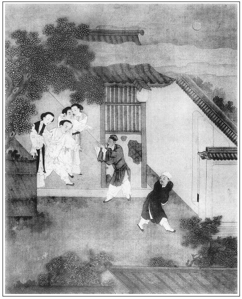

張回文字至五十回已一半矣。看他於四十九回內，即安一梵僧施藥，蓋為死瓶兒、西門之根。而必於諸人中先死二人者，見瓶之罄矣，凡百骸四肢，其能免乎？故前五十回，漸漸熱出來；此後五十四，又漸漸冷將去，而於上四十九回插入，卻於此回特為玳安一描生面，特特為一百回對照也。不然作得有此閒筆，為玳安敘家常乎？
此回特寫王六兒與瓶兒試藥起，蓋為瓶兒伏病死之由，亦為西門伏死於王六兒之由也。恐再著金蓮，一回中難寫，故接手又寫下一回品玉之金蓮也。文字用意之處，井井如此。而人不看，奈何奈何！
瓶兒之死，伏於試藥，不知官哥之死，亦伏於此。看其特特將博浪鼓一點，而後文暑物之哭，遙遙相照矣。夫博浪鼓一戲物耳，一見而官哥生矣，再現而官哥不保矣。至睹物之哭，乃一點前數回之金針結穴耳。其細密如此。
此回入一薛姑子，見萬奔中有雪來說法，其凋零之象不言可知。故此回又借薛姑子全收拾杏梅等一切春色，而薛姑子特於梵僧相對也。信乎！此回文字乃作者欲收拾以上筆墨，作下五十回結果之計也。上五十回是因，下五十回是果。
上文特起：—苗員外之因，何也？蓋以前西門諸惡皆是貪色，而財字上的惡尚未十分。惟有苗青一事，則貪財之惡，與毒武大、死子虛等矣。而來保、韓道國自苗青處來，拐財同去，真是一線不差。天理不爽如此！
篇末又為孝哥作引。寫得如此行徑，月娘之丑之惡，已盡情不堪矣。
詞曰：
欲掩香幃論繾綣，先斂雙蛾愁夜短。催促少年郎，先去睡，鴛衾圖暖。須臾整頓蝶蜂情，脫羅裳、恣情無限。留著帳前燈，時時看伊嬌面。
──右調《菊花心》

話說那日李嬌兒上壽，觀音庵王姑子請了蓮花庵薛姑子來，又帶了他兩個徒弟妙鳳、妙趣。張夾二名合觀，一笑。再加一薛姑父。夫遇妙趣之縫安得不洩。洩入趣縫安能不妙乎！月娘知道他是個有道行的姑子，連忙出來迎接。見他戴著清淨僧帽，披著茶褐袈裟，剃的青旋旋頭兒，生得魁肥胖大，沼口豚腮。張夾活畫。進來與月娘眾人合掌問訊，慌的月娘眾人連忙行禮。見他鋪眉苫眼，拿班做勢，口裡咬文嚼字，張夾活畫。一口一聲只稱呼他「薛爺」。他便叫月娘是「在家菩薩」，或稱「官人娘子」。月娘甚是敬重他。那日大妗子、楊姑娘都在這裡，月娘擺茶與他吃，菜蔬點心擺了一大桌子，比尋常分外不同。兩個小姑子妙趣、妙鳳才十四五歲，生的甚是清俊，就在他旁邊桌頭吃東西。吃了茶，都在上房內坐的。聽著他講道說話。只見書僮兒前邊收下家活來，月娘便問道：「前邊那吃酒肉的和尚去了？」書僮道：「剛才起身，爹送出他去了。」吳大妗子因問：「是那裡請來的僧人？」月娘道：「是他爹今日與蔡御史送行，門外寺裡帶來的一個和尚，酒肉都吃的。他求甚麼藥方，與他銀子也不要，錢也不受，誰知他幹的甚麼營生！」那薛姑子聽見，便說道：「茹葷、飲酒這兩件事也難斷。倒是俺這比丘尼還有些戒行，他漢僧們那裡管！《大藏經》上不說的，如你吃他一口，到轉世過來須還他一口。」吳大妗子聽了，道：「像俺們終日吃肉，卻不知轉世有多少罪業！」薛姑子道：「似老菩薩，都是前生修來的福，張夾活畫。享榮華，受富貴。譬如五穀，你春天不種下，到那有秋之時，怎望收成？」這裡說話不題。
且說西門慶送了胡僧進來，只見玳安悄悄說道：「頭裡韓大嬸使了他兄弟來請爹，說今日是他生日，請爹好歹過去坐坐。」西門慶得了胡僧藥，心裡正要去和婦人試驗，不想來請，正中下懷，即吩咐玳安備馬，使琴童先送一罈酒去。於是逕走到金蓮房裡張旁伏。取了淫器包兒，便衣小帽，帶著眼紗，玳安跟隨，逕往王六兒家來。下馬到裡面，就吩咐：「留琴童兒伺候，玳安回了馬家去。等家裡問，就說我在獅子街房子裡算帳哩。」玳安應諾，騎馬回家去了。王六兒出來與西門慶磕了頭，在旁邊陪坐，說道：「無事，請爹過來散心坐坐。又多謝爹送酒來。」西門慶道：「我忘了你生日。今日往門外送行去，才來家。」因向袖中取出一根簪兒，遞與他道：「今日與你上壽。」張眉乃偷的李瓶兒之物也。婦人接過來觀看，卻是一對金壽字簪兒，說道：「到好樣兒。」連忙道了萬福。西門慶又遞與他五錢銀子，吩咐：「你稱五分，交小廝有南燒酒買一瓶來我吃。」王六兒笑道：「爹老人家別的酒吃厭了，想起來又要吃南燒酒了。」連忙稱了五分銀子，使琴童兒拿瓶買去。一面替西門慶脫了衣裳，請入房裡坐的。親自頓好茶與西門慶吃，又放小桌兒看牌耍子。看了一回，才收拾吃酒不題。
單表玳安張夾一百回以玳安結。此回不得不為玳安一寫也。回馬到家，因跟和尚走的乏困了，一覺直睡到掌燈時便才醒了。揉揉眼兒，見天晚了，走到後邊要燈籠接爹去，只顧立著。月娘因問他：「頭裡你爹打發和尚去了，也不進來換衣裳，三不知就去了。端的在誰家吃酒？」玳安道：「爹沒往人家去，在獅子街房裡算帳哩。」月娘道：「算帳？沒的算恁一日！」玳安道：「算了帳，爹自家吃酒哩。」張夾白的妙。月娘道：「又沒人陪他，莫不平白的自家吃酒？眼見的就是兩樣話。頭裡韓道國的小廝來尋你做甚麼？」玳安道：「他來問韓大叔幾時來。」月娘罵道：「賊囚根子，你又不知弄甚麼鬼！」玳安不敢多言。月娘交小玉拿了燈籠與他，吩咐：「你說家中你二娘等著上壽哩。」
玳安應諾，走到前邊鋪子裡，只見書僮兒和傅夥計坐著，水櫃上放著一瓶酒、幾個碗碟、一盤牛肚子，平安兒從外拿了兩瓶鮓來，正飲酒。玳安看見，把燈籠掠下，說道：「好呀！我趕著了。」因向書僮兒戲道：「好淫婦，我那裡沒尋你，你原來躲在這裡吃酒兒。」書僮道：「你尋我做甚麼？想是要與我做半日孫子兒！」玳安罵道：「秫秫小廝，你也回嘴！我尋你，要㒲你的屁股。」張夾總是極力寫一浪蝶。於是走向前按在椅子上就親嘴。那書僮用手推開，說道：「怪行貨子，我不好罵出來的。把人牙花都磕破了，帽子都抓落了人的。」傅夥計見他帽子在地下，說道：「新一盞燈帽兒。」交平安兒：「你替他拾起來，只怕躧了。」被書僮拿過，往炕上只一摔，把臉通紅了。玳安道：「好淫婦，我逗你逗兒，你就惱了？」不由分說，掀起腿把他按在炕上，盡力往他口裡吐了一口唾沫，把酒推翻了，流在水櫃上。傅夥計恐怕濕了帳簿，張夾畫。連忙取手巾來抹了，說道：「管情住回兩個頑惱了。」玳安道：「好淫婦，你今日討了誰口裡話，這等扭手扭腳？」書僮把頭髮都揉亂了，說道：「耍便耍，笑便笑，臢剌剌的㞞水子吐了人恁一口！」玳安道：「賊村秫秫，你今日才吃㞞？你從前已後把㞞不知吃了多少！」平安篩了一甌子酒遞與玳安，說道：「你快吃了接爹去罷，有話回來和他說。」張夾映前報仇，帶三分怕事意。玳安道：「等我接了爹回來，和他答話。我不把秫秫小廝不擺佈的見神見鬼的，他也不怕。我使一些唾沫也不是人養的，我只一味干粘。」張夾浪蝶至此，亦春意爛漫矣。於是吃了酒，門班房內叫了個小伴當拿著燈籠，他便騎著馬，到了王六兒家。叫開門，問琴童兒：「爹在那裡？」琴童道：「爹在屋裡睡哩。」於是關上門，兩個走到後邊廚下。老馮便道：「安官兒，你韓大嬸只顧等你不見來，替你留下分兒了。」就向廚櫃裡拿了一盤驢肉、一碟臘燒雞、兩碗壽麵、一素子酒。張旁上文餘波。玳安吃了一回，又讓琴童道：「你過來，這酒我吃不了，咱兩個噤了罷。」琴童道：「留與你的，你自吃罷。」玳安道：「我剛才吃了甌子來了。」於是二人吃畢，玳安便叫道：「馮奶奶，我有句話兒說，你休惱我。想著你老人家在六娘那裡，替俺六娘當家，張旁將瓶兒與王六兒一照，為此日同試藥作映。如今在韓大嬸這裡，又與韓大嬸當家。繡眉「當家」二字，措辭甚雅。到家看我對六娘說也不說！」張夾又是一番描寫。那老馮便向他身上拍了一下，說道：「怪倒路死猴兒！休要是言不是語到家裡說出來，就交他惱我一生，我也不敢見他去。」
這裡玳安兒和老馮說話，不想琴童走到臥房窗子底下，悄悄聽覷。原來西門慶用燒酒把胡僧藥吃了一粒下去，脫了衣裳，坐在床沿上。打開淫器包兒，先把銀托束其根下，龜頭上使了硫黃圈子，又把胡僧與他的粉紅膏子藥兒，盛在個小銀盒兒內，捏了有一厘半兒，安放在馬眼內。登時藥性發作，那話暴怒起來，露稜跳腦，凹眼圓睜，橫筋皆見，色若紫肝，約有六七寸長，比尋常分外粗大。西門慶心中暗喜：果然此藥有些意思。婦人脫得光赤條條，坐在他懷裡，一面用手籠揝。說道：「怪道你要燒酒吃，原來幹這營生！」因問：「你是那裡討來的藥？」西門慶把胡僧與他的藥告訴一遍。先令婦人仰臥床上，背靠雙枕，手拿那話往裡放。龜頭昂大，濡研半晌，方才進入些須。婦人淫津流溢，少頃滑落，已而僅沒龜稜。西門慶酒興發作，淺抽深送，覺翕翕然暢美不可言。婦人則淫心如醉，酥癱於枕上，口內呻吟不止。口口聲聲只叫：「大𩫻𩫵達達，淫婦今日可死也！」張夾淫態，是六兒，非金蓮。又道：「我央及你，好歹留些功夫在後邊耍耍。」繡眉一人而兼南北之趣，六兒不怕閒童妒殺耶！西門慶於是把老婆倒蹶在床上，那話頂入戶中，扶其股而極力𢵞磞，𢵞磞的連聲響亮。老婆道：「達達，你好生𢵞打著淫婦，休要住了。再不，你自家拿過燈來照著頑耍。」西門慶於是移燈近前，令婦人在下直舒雙足，他便騎在上面，兜其股蹲踞而提之；張夾活畫出來。老婆在下一手揉著花心，扳其股而就之，顫聲不已。西門慶因對老婆說：「等你家的來，我打發他和來保、崔本揚州支鹽去。支出鹽來賣了，就交他往湖州織了絲綢來，好不好？」張夾與六兒交合時必講買賣，見六兒原利財而為此，西門亦止以財動之也。老婆道：「好達達，隨你交他那裡，只顧去，留著王八在家裡做甚麼？」因問：「鋪子卻交誰管？」西門慶道：「我交賁四且替他賣著。」王六兒道：「也罷，且交賁四看著罷。」這裡二人行房，不想都被琴童兒窗外聽了。玳安從後邊來，見他聽覷，向身上拍了一下，說道：「平白聽他怎的？趁他未起來，咱們去來。」琴童跟他到外邊。
玳安道：「這後面小胡同子裡，新來了兩個小丫頭子。我頭裡騎馬打這裡過，看見在魯長腿屋裡。一個叫金兒，一個叫賽兒，都不上十七八歲。交小伴當在這裡看著，咱們混一回子去。」一面吩咐小伴當：「你在此聽著門，俺們淨淨手去。等裡邊尋，你往小胡同口兒上來叫俺們。」吩咐了，兩個月亮地裡走到小巷內。原來這條巷喚做蝴蝶巷，張夾巷名分明點出。裡邊有十數家，都是開坊子吃衣飯的。玳安已有酒了，叫門叫了半日才開。原來王八正和虔婆魯長腿在燈下拿黃桿大等子稱銀子，見兩個凶神也似撞進來，連忙把裡間屋裡燈一口悄滅。王八認的玳安是提刑所西門老爹家管家，便讓坐。玳安道：「叫出他姐兒兩個，唱個曲兒俺們聽就去。」王八道：「管家，你來的遲了一步兒，兩個剛才都有人了。」玳安不由分說，兩步就撞進裡面。只見燈也不點，月影中，張夾無燈偏有月，妙絕。看見炕上有兩個戴白氈帽的酒太公──一個炕上睡下，那一個才脫裹腳，便問道：「是甚麼人進屋裡來？」玳安道：「我㒲你娘的眼！」颼的只一拳去，打的那酒保叫聲：「阿樂！」裹腳襪子也穿不上，往外飛跑。那一個在炕上爬起來，一步一跌也走了。玳安叫掌起燈來，罵道：「賊野蠻流民，他倒問我是那裡人！剛才把毛搞淨了他的才好，平白放他去了。好不好拿到衙門裡去，交他且試試新夾棍著！」張夾衙門亦為玳安諕人之地，可歎。魯長腿向前掌上燈，拜了又拜，說：「二位管家哥哥息怒，他外京人不知道，休要和他一般見識。」因令：「金兒、賽兒出來，唱與二位叔叔聽。」只見兩個都是一窩絲盤髻，穿著洗白衫兒，紅綠羅裙兒，向前道：「今日不知叔叔來，夜晚了，張夾二字自金蓮來後，至今不聞。沒曾做得準備。」一面放了四碟乾菜，其餘幾碟都是鴨蛋、蝦米、熟鮓、鹹魚、豬頭肉、干板腸兒之類。繡旁美饌。玳安便摟著賽兒，張夾玳安可謂賽蝴蝶。琴童便擁著金兒。玳安看見賽兒帶著銀紅紗香袋兒，就拿袖中汗巾兒，兩個換了。少頃篩酒上來，賽兒拿鍾兒斟酒，遞與玳安。先是金兒取過琵琶來，奉酒與琴童，唱個《山坡羊》道：
煙花寨，委實的難過。白不得清涼到坐。逐日家迎賓待客，一家兒吃穿全靠著奴身一個。到晚來印子房錢逼的是我。老虔婆他不管我死活。在門前站到那更深兒夜晚，到晚來有那個問聲我那飽餓？煙花寨再住上五載三年來，奴活命的少來死命的多。不由人眼淚如梭。有鐵樹上開花，那是我收圓結果。
金兒唱畢，賽兒又斟一杯酒遞與玳安兒，接過琵琶來才待要唱，張夾妙，再唱便嚼蠟矣。忽見小伴當來叫，二人連忙起身。玳安向賽兒說：「俺們改日再來望你。」說畢出門，來到王六兒家。西門慶才起來，老婆陪著吃酒哩。兩個進入廚房內，問老馮：「爹尋我每來？」老馮道：「你爹沒尋，只問馬來了，我回說來了。再沒言語。」兩個坐在廚下問老馮要茶吃，每人喝了一甌子茶，交小伴當點上燈籠牽出馬去。西門慶臨起身，老婆道：「爹，好暖酒兒，你再吃上一鍾兒。你到家莫不又吃酒？」西門慶道：「到家不吃了。」於是拿起酒來又吃了一鐘。老婆便道：「你這一去，幾時來走走？」西門慶道：「等打發了他每起身，我才來哩。」說畢，丫頭點茶來漱了口。王六兒送到門首，西門慶方上馬歸家。
卻表金蓮同眾人在月娘房內，聽薛姑子徒弟──兩個小姑子唱佛曲兒。忽想起頭裡月娘罵玳安：「說兩樣話，……不知弄的甚麼鬼！」因回房向床上摸那淫器包兒，又沒了。張夾現淫婦身說法者。叫春梅問，春梅說：「頭裡爹進屋裡來，向床背閣抽屜內翻了一回去了。誰知道那包子放在那裡。」金蓮道：「他多咱進來，我怎就不知道？」春梅道：「娘正往後邊瞧薛姑子去了。爹戴著小帽兒進屋裡來，我問著，他又不言語。」金蓮道：「一定拿了這行貨，往院中那淫婦家去了。等他來家，我好生問他！」因又往後邊去了。不想西門慶來家，見夜深，也沒往後邊去，琴童打著燈籠，送到花園角門首，就往李瓶兒屋裡去了。琴童兒把燈一交送到後邊，小玉收了。月娘看見，便問道：「你爹來了？」琴童道：「爹來了，往前邊六娘房裡去了。」月娘道：「你看是有個槽道的？這裡人等著，就不進來了。」李瓶兒慌的走到前邊，對面門慶說道：「他二娘在後邊等著你上壽，你怎的平白進我這屋裡來了？」西門慶笑道：「我醉了，明日罷。」李瓶兒道：「就是你醉了，到後邊也接個鐘兒。你不去，惹他二娘不惱麼！」一力攛掇西門慶進後邊來。李嬌兒遞了酒，月娘問道：「你今日獨自一個，在那邊房子裡坐到這早晚？」西門慶道：「我和應二哥吃酒來。」月娘道，「可又來。我說沒個人兒，自家怎麼吃！」說過就罷了。
西門慶坐不移時，提起腳兒還踅到李瓶兒房裡來。原來是王六兒那裡，因吃了胡僧藥，被藥性把住了，張旁瓶兒與王六兒起手，金蓮與王六兒結末，而西門死矣。前後又遙遙相照。與老婆弄聳了一日，恰好沒曾丟身子。那話越發堅硬，形如鐵杵。張夾加倍寫來，使金蓮後死西門時不謬。進房交迎春脫了衣裳，就要和李瓶兒睡。李瓶兒只說他不來，和官哥在床上已睡下了。回過頭來見是他，便道：「你在後邊睡罷了，又來做甚麼？孩子才睡的甜甜兒的。我這裡不奈煩，又身上來了，不方便。你往別人屋裡睡去不是，只來這裡纏！」被西門慶摟過脖子來就親了個嘴，說道：「這奴才，你達心裡要和你睡睡兒。」因把那話露出來與李瓶兒瞧，張夾吃春藥者，第一以此一瞧為樂。諕的李瓶兒要不的。說道：「耶樂！你怎麼弄的他這等大？」西門慶笑著告他說吃了胡僧藥一節：「你若不和我睡，我就急死了。」李瓶兒道：「可怎麼樣的？身上才來了兩日，還沒去，亦發等去了，我和你睡罷。你今日且往他五娘屋裡歇一夜兒，也是一般。」西門慶道：「我今日不知怎的，一心只要和你睡。我如今拉個雞兒央及你央及兒，再不你交丫頭掇些水來洗洗，和我睡睡也罷。」張夾西門死瓶兒在此。李瓶兒道：「我到好笑起來──你今日那裡吃的恁醉醉兒的，來家歪斯纏我？就是洗了也不乾淨。一個老婆的月經沾污在男子漢身上臢剌剌的，也晦氣。我到明日死了，你也只尋我？」張夾又是一番卜龜。於是吃逼勒不過，交迎春掇了水，下來澡牝乾淨，方上床與西門慶交會。可霎作怪，李瓶兒慢慢拍哄的官哥兒睡下，只剛爬過這頭來，那孩子就醒了。一連醒了三次。李瓶兒交迎春拿博浪鼓兒哄著他，抱與奶子那邊屋裡去了，張夾又點睹物之哭。這裡二人方才自在頑耍。西門慶坐在帳子裡，李瓶兒便馬爬在他身上，西門慶倒插那話入牝中。已而燈下窺見他雪白的屁股兒，用手抱著，且細觀其出入。那話已被吞進小截，興不可遏。李瓶兒怕帶出血來，繡眉病根。不住取巾帕抹之。西門慶抽拽了一個時辰，兩手抱定他屁股，只顧揉搓，那話盡入至根，不容毛髮，臍下毳毛皆刺其股，覺翕翕然暢美不可言。瓶兒道：「達達，慢著些，頂的奴裡邊好不疼！」西門慶道：「你既害疼，我丟了罷。」於是向桌上取過冷茶來呷了一口，登時精來，一洩如注。
正是：
四體無非暢美，一團都是陽春。
西門慶方知胡僧有如此之妙藥。睡下時已三更天氣。
且說潘金蓮見西門慶在李瓶兒屋裡歇了，只道他偷去淫器包兒和他頑耍，更不體察外邊勾當。張旁上文兩番點金蓮以此。是夜暗咬銀牙，關門睡了。張夾金蓮自有金蓮之心事。月娘和薛姑子、王姑子在上房宿睡。王姑子把整治的頭男衣胞並薛姑子的藥，悄悄遞與月娘。薛姑子叫月娘：「揀個壬子日，用酒吃下，晚夕與官人同床一次，就是胎氣。不可交一人知道。」月娘連忙將藥收了，拜謝了兩個姑子。張夾月娘又有月娘之事之心，可歎可畏。又向王姑子道：「我正月裡好不等著，你就不來了。」王姑子道：「你老人家倒說的好，這件物兒好不難尋！虧了薛師父。──也是個人家媳婦兒養頭次娃兒，可可薛爺在那裡，悄悄與了個熟老娘三錢銀子，才得了。繡眉出家人如此作福的，真難得，雖然，然乎否？替你老人家熬礬水打磨乾淨，兩盒鴛鴦新瓦，泡煉如法，用重羅篩過，攪在符藥一處才拿來了。」月娘道：「只是多累薛爺和王師父。」於是每人拿出二兩銀子來相謝。說道：「明日若坐了胎氣，還與薛爺一疋黃褐緞子做袈裟穿。」那薛姑子合掌道了問訊：「多承菩薩好心！」常言：十日賣一擔針賣不得，一日賣三擔甲倒賣了。正是：
若教此輩成佛道，天下僧尼似水流。
文回文禹門云：西門慶招來和尚，吳月娘請到尼姑，一倡一隨，是夫是婦，西門慶偷民妻，玳安等鬧娼婦，上行下效，是主是奴。合而言之，可像正經人家？成個什麼世界？分而論之，西門慶只是荒淫，吳月娘尚知慮後，西門慶愈驕愈縱，玳安兒越學越非。此等人家，何能興旺！此等人物，何得久長！然此三人，西門不久身亡，月娘轉獲壽考，玳安亦遂成人。正謂月娘不是淫人，玳安尚非惡僕。作者決無偏袒，閱者何必吹毛。彼深惡月娘者，或有傷於其正室，亦未可知也。
即以此回試藥而論，月娘為正配，上回留宿，月娘吞符，西門並未服藥，此胎之所以能成，並以尊月娘身份也。淫婦等次，自有權衡，先王六兒，次李瓶兒，次潘金蓮，次孟玉樓，次李桂兒，春梅則在暗中。獨王六兒與潘六兒描寫淋漓盡致，此二人所以為西門慶大敵也。王六兒尚有其夫，潘六兒已收其婿，淫人之淫，一至此乎？西門慶蓋有所授之矣，彼淫婦亦何足言哉！
按：「作者決無偏袒，閱者何必吹毛。」系指張竹坡原評：「偏來又為孝哥作引，寫得如此行徑，月娘之丑之惡，已盡情不堪矣。」